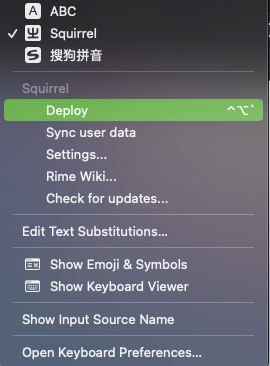

前言
市面上那么多输入法为什么还要折腾一个新的输入法？
许多年前有爆出输入法泄漏隐私的问题，一些数据没有经过加密传输。
这些想想都让人后怕。经过一段时间的摸索，逐步上手了 RIME ，因为 RIME 并不是那么容易上手，所以我把摸索的一些经验写成文章，希望能帮助到想使用 RIME 的伙伴。
安装
RIME 在各个平台都有提供，并且叫法不一样， Windows 下叫 小狼毫 、 Mac 下叫 鼠鬚管 、 Linux 下叫 中州韻 。本文以 Mac 为例讲述在 Mac 上使用。
Mac 平台使用如下命令进行安装
1
|
brew install squirrel --cask
|
基本概念
rime 把配置文件分为共享资料和用户资料。
共享资料
共享资料是软件自带的，包含预设方案，对用户只读。 Mac 共享目录在 /Library/Input Methods/Squirrel.app/Contents/SharedSupport 。
修改了这里的文件会影响软件的升级。所以一般我们不会去修改这个目录下的文件。
用户资料
用户资料在 ~/Library/Rime 下，用户资料有以下几个文件
- default.yaml 全局设定
- squirrel.yaml 发行版设定
- 输入方案.schema.yaml 输入方案指的是明月拼音、小鹤双拼。如果你用的是明月拼音这个文件就是
luna_pinyin.schema.yaml
这些都是默认的配置，如果我们要修改，需要在文件类型前面加上 custom 例如 default.custom.yaml
切换输入方案
RIME 会内置一些输入方案，比如明月拼音。你可以通过 F4 来切换你想要的。
外观
如果我们需要修改输入法的外观，首先需要创建 ~/Library/Rime/squirrel.custom.yaml
1
2
3
4
5
6
7
8
9
10
11
12
13
14
15
16
17
18
19
20
21
22
23
24
25
26
27
28
29
30
31
32
33
34
35
36
37
38
39
40
41
42
43
44
45
46
47
48
|
patch:
show_notifications_when: appropriate # 状态通知，适当，也可设为全开（always）全关（never）
"style/display_tray_icon": true
"style/horizontal": true #横排显示
"style/font_face": "Microsoft YaHei" #字体
"style/font_point": 13 #字体大小
"style/inline_preedit": true # 嵌入式候选窗单行显示
"style/layout/border_width": 0
"style/layout/border": 0
"style/layout/margin_x": 12 #候选字左右边距
"style/layout/margin_y": 12 #候选字上下边距
"style/layout/hilite_padding": 12 #候选字背景色色块高度 若想候选字背景色块无边界填充候选框，仅需其高度和候选字上下边距一致即可
"style/layout/hilite_spacing": 3 # 序号和候选字之间的间隔
"style/layout/spacing": 10 #作用不明
"style/layout/candidate_spacing": 24 # 候选字间隔
"style/layout/round_corner": 0 #候选字背景色块圆角幅度
"style/color_scheme": devbins # 选词皮肤
preset_color_schemes:
devbins:
name: "devbins"
author: "@devbins"
horizontal: true # 水平排列
inline_preedit: true # true: 单行显示，false: 双行显示
candidate_format: "\u2005%c\u2005%@\u2005" # 用 1/6 em 空格 U+2005 来控制编号 %c 和候选词 %@ 前后的空间。
corner_radius: 5 # 候选条圆角
border_height: 1 # 窗口边界高度，大于圆角半径才生效
border_width: 1 # 窗口边界宽度，大于圆角半径才生效
back_color: 0xFFFFFF # 候选条背景色
border_color: 0xD77800 # 边框色
font_face: "STKaiti" # 候选词字体
font_point: 19 # 候选字词大小
text_color: 0x000000 # 高亮选中词颜色
label_font_face: "SimHei" # 候选词编号字体
label_font_point: 18 # 候选编号大小
label_color: 0x9e9e9e # 预选栏编号颜色
candidate_text_color: 0x000000 # 预选项文字颜色
text_color: 0x000000 # 拼音行文字颜色，24位色值，16进制，BGR顺序
comment_text_color: 0x999999 # 拼音等提示文字颜色
hilited_text_color: 0x000000 # 高亮拼音 (需要开启内嵌编码)
hilited_back_color: 0xffffff # 已选择字右侧拼音 背景色
hilited_candidate_text_color: 0xFFFFFF # 第一候选项文字颜色
hilited_candidate_back_color: 0xD77800 # 第一候选项背景背景色
hilited_candidate_label_color: 0x9e9e9e # 第一候选项编号颜色
hilited_comment_text_color: 0x9e9e9e # 注解文字高亮
|
配置输入法
我这里使用的是明月拼音，就以明月拼音为例。明月拼音的的配置在 ~/Library/Rime/luna_pinyin.custom.yaml
1
2
3
4
5
6
7
8
9
10
|
patch:
switches: # 注意缩进
- name: ascii_mode
reset: 0 # reset 0 的作用是当从其他输入法切换到本输入法重设为指定状态
states: [ 中文, 西文 ] # 选择输入方案后通常需要立即输入中文，故重设 ascii_mode = 0
- name: full_shape
states: [ 半角, 全角 ] # 而全／半角则可沿用之前方案的用法。
- name: simplification
reset: 1 # 增加这一行：默认启用「繁→簡」转换。
states: [ 漢字, 汉字 ]
|
修改默认行为
有时候我们想修改候选词的数量，或者按下 Shift 之后能够把字符上屏，这些在默认中是没有的，所以我们要更改这些行为。
创建 ~/Library/Rime/default.custom.yaml 加入如下配置
1
2
3
4
5
6
7
8
9
10
11
12
13
14
15
|
patch:
"menu/page_size": 7
"translator/enable_user_dict": true
"translator/enable_encoder": true #是否开启自动造词〔仅table_translator有效〕
"translator/encode_commit_history": true #是否对已上屛词自动成词〔仅table_translator效〕
"translator/enable_sentence": true #是否开启自动造句
ascii_composer/good_old_caps_lock: true
ascii_composer/switch_key:
Caps_Lock: noop
Shift_L: commit_code
Shift_R: noop
Control_L: noop
Control_R: noop
|
这样一次就会显示7个候选词了，并且输入中文的时候按下 Shift_L 会把当前输入的符号自动上屏，并且切换到英文输入法，这就和我们常用的输入法一致了。
词库
一个输入法好不好用，跟输入法里面的词库有莫大的联系，由于内置的词库并不是很丰富，所以我们需要添加一些第三方词库。
下载词库
1
2
|
cd ~/Library/Rime
curl -O -L https://github.com/outloudvi/mw2fcitx/releases/download/20220218/moegirl.dict.yaml
|
词库也需要下载到用户共享资料目录中
配置词库
下载好了，我们需要告诉明月拼音去哪里加载，所以还需要在 ~/Library/Rime/luna_pinyin.custom.yaml 中加入词库的位置
1
2
3
|
patch:
# ...
"translator/dictionary": luna_pinyin.extended
|
接着创建 ~/Library/Rime/luna_pinyin.extended.dict.yaml 并加入如下文件
1
2
3
4
5
6
7
8
9
|
# luna_pinyin.extended.dict.yaml
---
name: luna_pinyin.extended
version: "2022.05.04"
sort: by_weight
use_preset_vocabulary: true
import_tables:
- luna_pinyin
- moegirl
|
在这个文件中我们把刚刚下载好的 moegirl 放到了 import_tables 中的末尾，这样就可以使用了。
做完这些之后还要部署一下，告诉 rime 配置有更新，这样才会生效。

效果
参考